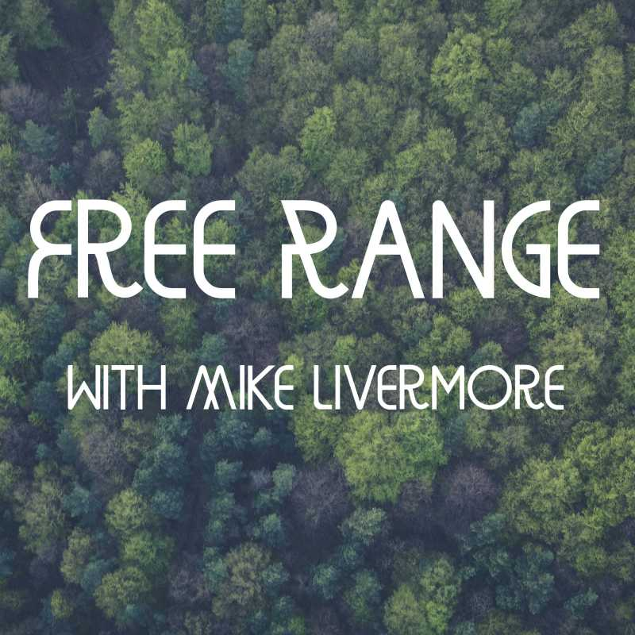

Free Range

Free Range ran for two seasons, from 2021 to 2024: fifty-five conversations with guests from journalism, law, politics, science, economics, philosophy, and environmental science. Environmental law and policy are never easy or uncontroversial, but they can be better understood through multiple perspectives. The show was produced with support from the Program on Law, Communities and the Environment at the University of Virginia School of Law.
Every episode is archived here with its summary, and most with a transcript. Audio is on the usual platforms. Below the two seasons is an earlier series of interviews recorded for the Intercontinental Academia in 2021.
Season 2
- 25Natalie Jacewicz on Conservation and AbundanceDecember 16, 2024
On this episode of Free Range, host Mike Livermore is joined by Natalie Jacewicz, a professor at the University of San Diego School of Law.
- 24Adam Ortiz on Life as an EPA Regional AdministratorApril 8, 2024
On this episode of Free Range, host Mike Livermore is joined by Adam Ortiz, the MidAtlantic regional administrator at the Environmental Protection Agency.
- 23bSFI Working Group on BiodiversityMarch 21, 2024
This bonus episode is an impromptu roundtable discussion that was part of a working group at the Santa Fe Institute in February 2024 on biodiversity and the sustainable development goals.
- 22In Memoriam, Dick Stewart and the Reformation of U.S. Environmental LawDecember 28, 2023
In this solo episode, host Mike Livermore discusses the career of Dick Stewart, a mentor who was a longtime faculty member at NYU Law who died this past year.
- 21Cale Jaffe on Environmental Advocacy and Clinical EducationNovember 14, 2023
In this episode of the Free Range Podcast, host Michael Livermore is joined by guest Cale Jaffe, director of the Environmental Law and Community Engagement Clinic at the University of Virginia School of Law. The conversation touches on several key issues in environmental scholarship and pedagogy.
- 20Nicholas Allen on Blue Humanities and Irish LiteratureNovember 1, 2023
On this episode of the Free Range Podcast, host Mike Livermore has a conversation with literary scholar Nicholas Allen about his recent book "Ireland, Literature and the Coast: Seatangled."
- 19Lisa Robinson on Cost-Benefit AnalysisOctober 18, 2023
On this episode of Free Range, host Mike Livermore is joined by Lisa Robinson, a senior research scientist and the deputy director at the Center for Health at the Harvard School of Public Health. Lisa is a leading expert in the use of cost-benefit analysis to evaluate public policy.
- 18Leif Wenar on Unity and the Resource CurseOctober 4, 2023
On this episode of Free Range, host Mike Livermore is joined by Leif Wenar, professor of philosophy at Stanford University and author of Blood Oil: Tyrants, Violence, and the Rules that Run the World.
- 17Lisa Heinzerling on Environmental Law and the Supreme CourtSeptember 20, 2023
On this episode Free Range, host Mike Livermore is joined by Lisa Heinzerling, an environmental law professor at Georgetown University and former Associate Administrator of the Environmental Protection Agency's Office of Policy during the Obama administration.
- 16Jessica Locke on Buddhism and Environmental EngagementSeptember 6, 2023
On this episode of Free Range, host Mike Livermore is joined by Jess Locke, an associate professor of philosophy at Loyola University, Maryland. She studies Buddhism, Western psychology, and cross-cultural philosophy.
- 15Lee Fennell on Rethinking PropertyAugust 23, 2023
On this episode of Free Range, host Mike Livermore is joined by Lee Fennell, a law professor at the University of Chicago and author of Slices and Lumps: Division and Aggregation in Law and Life.
- 14Sabeel Rahman on Democracy and AdministrationAugust 9, 2023
On this episode of Free Range Podcast, host Mike Livermore is joined by Sabeel Rahman, a professor at Cornell Law School with substantial public policy experience, including as president of the think tank Demos and as senior counselor and then later as the acting Administrator in the Office of Information and Regulatory Affairs in the Biden administration. Rahman is also the author of the book “Democracy Against Domination” amongst other works.
- 13Holly Doremus on Conservation in the AnthropoceneJuly 15, 2023
On this episode of Free Range, host Mike Livermore is joined by Holly Doremus, a professor of environmental law at Berkeley and the co-director for the Berkeley Institute for Parks, People, and Diversity. Doremus has a interdisciplinary background with a PhD in Plant Physiology from Cornell in addition to her JD. For Doremus, one of the benefits of an interdisciplinary educational experience is that it has helped her to better understand what questions different disciplines are able to address and what questions they may not have thought to ask.
- 12Richard Lazarus on the Shifting Politics of Environmental LawJuly 12, 2023
On this episode of Free Range, host Mike Livermore is joined by Harvard Law professor Richard Lazarus. Lazarus is the author of the book “The Making of Environmental Law”, which is now out in its second edition.
- 11Curtis, Gulati, and Weidemaier on Empty Green PromisesJune 28, 2023
On this episode of Free Range, host Mike Livermore is joined by UVA Law professors Quinn Curtis and Mitu Gulati, as well as UNC-Chapel Hill Law professor Mark Weidemaier, all experts in the regulation of financial markets, to discuss their new paper, "Green Bonds and Empty Promises."
- 10Ganesh Sitaraman & Shelley Welton on Networks, Platforms, and UtilitiesJune 14, 2023
On this episode of Free Range, host Mike Livermore is joined by Vanderbilt law professor Ganesh Sitaraman and University of Pennsylvania law professor Shelley Welton. Both guests are experts in regulatory policy and are co-authors of a new case book Networks, Platforms, and Utilities.
- 9Jenny Kendler on Art and Environmental CrisisMay 31, 2023
On this episode of Free Range, host Mike Livermore is joined by Jenny Kendler, the artist in residence with NRDC. Kendler is an artist and activist whose work focuses on climate change and biodiversity loss.
- 8Danae Hernandez-Cortes on Environmental Economics & JusticeMay 17, 2023
On this episode of Free Range, Mike Livermore is joined by Danae Hernandez-Cortes, an economist and professor in the School of Sustainability at Arizona State University who studies environmental justice and the distributional consequences of environmental policy.
- 7Paul Stephan on the Knowledge Economy and Global PoliticsMay 3, 2023
On this episode of Free Range, host Mike Livermore is joined by Paul Stephan, a comparative and international law expert at UVA Law and author of the new book, “The World Crisis and International Law: The Knowledge Economy and the Battle for the Future,” recently published by Cambridge University Press.
- 6Alex Wang on Environmental Governance in ChinaApril 19, 2023
On this episode of Free Range, host Mike Livermore is joined by Alex Wang, Professor of Law at UCLA, co-director of the Emmett Institute on Climate Change and the Environment, and expert on the law and politics of Chinese environmental governance.
- 5Emma Marris on Ethics and the Non-Human WorldApril 5, 2023
On this episode of Free Range, Mike Livermore is joined by Emma Marris, an award-winning environmental writer and author of Wild Souls: Freedom and Flourishing in the Non-human World. (0:00-1:26)
- 4Jed Stiglitz on the Reasoning StateMarch 22, 2023
On this episode of Free Range, host Mike Livermore is joined by Jed Stiglitz, a law professor at Cornell whose new book, The Reasoning State, was recently published by Cambridge University Press.
- 3Alex Guerrero on Democracy by LotteryMarch 8, 2023
On this episode of Free Range, host Mike Livermore is joined by Alex Guerrero, a philosophy professor at Rutgers who writes in moral and political philosophy. Guerrero is a leading philosophical defender of the idea of lottocracy—the practice of choosing political leaders through lottery rather than elections.
- 2Explainer: The Controversy over Wood PelletsFebruary 22, 2023
On this episode of Free Range, Host Mike Livermore is joined by two University of Virginia Law students, Matt Disandro and Elizabeth Putfark, who have produced this explainer episode on the pros and cons of wood pellets as a replacement for fossil fuels.
- 1Laura Candiotto on Loving NatureFebruary 8, 2023
On this episode of Free Range, Mike Livermore is joined by Laura Candiotto, a Professor of Philosophy at the University of Pardubice in the Czech Republic. Candiotto’s recent paper, "Loving the Earth by Loving a Place," serves as the starting point for the conversation in today’s episode.
Season 1
- 30Host Mike Livermore on Interdisciplinary EngagementDecember 28, 2022
Host Mike Livermore concludes Season 1 of Free Range with a solo episode on the value of interdisciplinary engagement.
- 29Rich Schragger on the Power of CitiesDecember 14, 2022
On today’s episode of Free Range, Michael Livermore speaks with UVA Law colleague Rich Schragger a leading expert on local government, federalism, and urban policy and the author of City Power: Urban Governance in a Global Age.
- 28Michael Greenstone on Economics and Environmental PolicyNovember 30, 2022
On today’s episode of Free Range, Livermore is joined by Michael Greenstone, the Milton Freedman Distinguished Service Professor in Economics and the Director of the Energy Policy Institute at the University of Chicago. He served as the Chief Economist for President Obama’s Council of Economic Advisors and has worked for decades engaged in research and policy development on environmental issues.
- 27Gerald Torres on Environmental JusticeNovember 16, 2022
On this episode of Free Range, Mike Livermore interviews Gerald Torres, a professor at the Yale School of the Environment and Yale Law School and Director of the Yale Center for Environmental Justice. Torres explores the connections between environmental law and social justice from a scholarly and practical perspective.
- 26Katherine Blunt on Energy and WildfiresNovember 2, 2022
On this episode of Free Range, Mike Livermore interviews Katherine Blunt, a journalist at the Wall Street Journal and the recent author of California Burning: The Fall of Pacific Gas and Electric and What it Means for America’s Power Grid.
- 25Jonathan Colmer on Environmental InequalityOctober 19, 2022
On this episode of Free Range, Mike Livermore speaks with Jonathan Colmer, an Assistant Professor at the University of Virginia’s Department of Economics and the Director of the Environmental Inequality Lab. His research interests are in environmental economics, development economics, and the distributional impacts of environmental policy.
- 24Michelle Wilde Anderson on America's CitiesOctober 5, 2022
On this episode of Free Range, Mike Livermore speaks with Michelle Wilde Anderson, a law professor at Stanford. Anderson is the author of The Fight To Save The Town: Reimagining Discarded America, published in June 2022.
- 23Henry Skerritt on Art and PoliticsSeptember 7, 2022
On this episode of Free Range, UVA Law Professor Mike Livermore speaks with Henry Skerritt, Curator of Indigenous Arts of Australia at the Kluge-Ruhe Aboriginal Art Collection at the University of Virginia.
- 22Jed Purdy on the Value of DemocracySeptember 7, 2022
On this episode of Free Range, UVA Law Professor Mike Livermore speaks with Jed Purdy, Duke Law Professor and author of the forthcoming Two Cheers for Politics: Why Democracy is Flawed, Frightening – and Our Best Hope.
- 21Matthew Burtner on EcoacousticsAugust 24, 2022
On this episode of Free Range, Michael Livermore speaks with Matthew Burtner, a Professor of Compositions and Computer Technologies in the music department at the University of Virginia. Burtner’s work explores ecology and the aesthetic link between human expression and environmental systems. His latest album is Ice Field.
- 20Moira O'Neill on Housing and Environmental ReviewAugust 10, 2022
On this episode of Free Range, Mike Livermore speaks with Moira O’Neill, a professor of Urban and Environmental Planning at the University of Virginia who also has a joint appointment at UVA Law. Her work covers land use, climate change, equity, and resilience. A specific area of her research is land use law and its relationship to housing affordability, integration, and environmental impacts in California.
- 19Ronald Sandler on Ethics and SpeciesJuly 27, 2022
On this episode of Free Range, Michael Livermore speaks with Ronald Sandler, a Professor of Philosophy at Northeastern University. Sandler writes on environmental ethics, emerging technologies, and ethical issues surrounding climate change, food, and species conservation. His books include Environmental Ethics: Theory and Practice and The Ethics of Species.
- 18Jonathan Adler on Federalism and Environmental LawJuly 13, 2022
On this episode of Free Range, Mike Livermore speaks with Jonathan Adler, a law professor at Case Western who writes on environmental law, federalism, and regulation. In 2020, Brookings Institution Press published Adler’s edited Marijuana Federalism: Uncle Sam and Mary Jane.
- 17Frances Moore on Modeling Climate PoliticsJune 29, 2022
On this episode of Free Range, Mike Livermore speaks with Frances Moore, a Professor of Environmental Science and Policy at UC Davis whose work focuses on climate economics. Recently, Moore was the lead author of a paper in Nature that examines an important set of feedbacks between politics and the climate system.
- 16Dale Jamieson on Environmental Ethics and DemocracyJune 15, 2022
On this episode of Free Range, Mike Livermore speaks with Dale Jamieson, a Professor of Environmental Studies and Philosophy at New York University. His most recent book, Discerning Experts, was published in 2019 by the University of Chicago Press.
- 15Kimberly Fields on Environmental Justice and the StatesJune 1, 2022
On this episode of Free Range, Mike Livermore speaks with Kimberly Fields, who is an Assistant Professor at the University of Virginia’s Woodson Institute of African-American and African Studies. Her recent work has focused on environmental justice, race, and inequality at the state level.
- 14Elizabeth Kolbert on Unintended ConsequencesMay 18, 2022
On this episode of Free Range, Mike Livermore speaks with Elizabeth Kolbert. Kolbert is a writer at The New Yorker, as well as the author of several books, including The Sixth Extinction: An Unnatural History, for which she won a Pulitzer Prize in 2015. Her most recent book, Under a White Sky: The Nature of the Future, was published in 2021.
- 13Jennifer Cole & Michael Vandenbergh on Social Psychology and Climate ChangeMay 4, 2022
On this episode of Free Range, Mike Livermore speaks with Jennifer Cole and Michael Vandenbergh. Dr. Cole is a postdoctoral scholar in social psychology at the Vanderbilt Climate Change Research Network, and Professor Vandenbergh is the David Daniels Allen Distinguished Chair of Law at the Vanderbilt University Law School. Their work examines the political polarization of climate change and covid policies.
- 12Cara Daggett on the Science and Politics of ThermodynamicsApril 20, 2022
On this episode of Free Range, Mike Livermore speaks with Cara Daggett, Assistant Professor of Political Science at Virginia Tech, about her new book The Birth of Energy: Fossil Fuels, Thermodynamics, and the Politics of Work.
- 11Nick Agar on Nature, Technology, and SocietyApril 6, 2022
On this episode of Free Range, Mike Livermore speaks with Nicholas Agar, a moral philosopher who is currently a Distinguished Visiting Professor at Carnegie Mellon University, Australia. His most recent book, How to be Human in the Digital Economy, was published by MIT Press in 2019.
- 10Arden Rowell on the Psychology of Environmental LawMarch 23, 2022
On this episode of Free Range, Mike Livermore speaks with Arden Rowell, a Professor of Law at the University of Illinois College of Law. Rowell’s work focuses on environmental law, human behavior, and the incorporation of a multidisciplinary approach to the study of environmental law. Her new book, The Psychology of Environmental Law, co-written with Kenworthey Bilz, was recently published by NYU Press.
- 9Shi-Ling Hsu on Capitalism and the EnvironmentMarch 2, 2022
On this episode of Free Range, Mike Livermore speaks with Shi-Ling Hsu, the D’Alemberte Professor of Law and Associate Dean for Environmental Programs at the Florida State University College of Law. He is also the author of the book Capitalism and the Environment: A Proposal to Save the Environment, which was published in December 2021 by Cambridge University Press.
- 8Karen Bradshaw on Property Rights for AnimalsFebruary 23, 2022
On this episode of Free Range, Mike Livermore speaks with Karen Bradshaw, a Professor of Law and the Mary Sigler Research Fellow at Arizona State University’s Sandra Day O’Connor College of Law. Bradshaw’s work examines the intersection of environmental law and property law. Her most recent book, Wildlife as Property Owners: A New Conception of Animal Rights, contends that property rights can be a useful tool in the protection of endangered wildlife.
- 7Jon Cannon on PlaceFebruary 9, 2022
Today on Free Range, Mike Livermore speaks with his colleague Jonathan Cannon, who retired from UVA Law in May 2021 after over two decades of teaching at the law school. Prior to joining UVA Law, Cannon served as general counsel to the EPA, and his 1998 memo, which has come to be known as “the Cannon memo,” was influential in opening a path for EPA to regulate greenhouse gas emissions. He is currently writing a book about the significance of “place.”
- 6Karen McGlathery on Coastal ResilienceJanuary 26, 2022
Today on Free Range, Mike Livermore discusses coastal preservation with Karen McGlathery. McGlathery is a professor at the University of Virginia’s Department of Environmental Sciences and the Director of UVA’s Environmental Resilience Institute. McGlathery’s work centers on coastal ecosystems and the discussion today covers a number of different topics related to climate change and coastal communities.
- 5Madison Condon on Climate and Corporate GovernanceJanuary 12, 2022
On this episode of Free Range with Mike Livermore, Mike speaks with Boston University School of Law professor Madison Condon about the interaction between corporate governance and environmental concerns. Condon has written extensively on how corporations are changing their approach to the environment in the face of climate change issues and the rise of ESG investing, which incorporates Environmental, Social, and Governance considerations into larger investment strategies.
- 4Willis Jenkins on the Humanities and Environmental ChangeDecember 29, 2021
On this episode of Free Range, Mike Livermore speaks with Willis Jenkins, the John Allen Hollingsworth Professor of Ethics and Chair of the University of Virginia’s Department of Religious Studies. In an enlightening conversation that flows from the nature of the humanities to the way in which concerns about access to water are thought about within the academy, Jenkins explains how his work brings together three distinct but connected concepts: religion, ethics, and the environment.
- 3Lee Buchheit and Mitu Gulati on Debt-for-Nature DealsDecember 15, 2021
On this episode of Free Range, Mike Livermore speaks with sovereign debt experts Lee Buchheit and Mitu Gulati. Buchheit is a retired partner at international law firm Cleary Gottlieb Steen & Hamilton, whose practice centers on international debt restructuring and project finance. He has worked on more than two dozen sovereign debt restructuring deals, including leading the team that advised the Greek government during its 2012 debt crisis. Mitu Gulati is the John V. Ray Research Professor of Law at the University of Virginia School of Law. In addition to his academic work, he is the host of Clauses and Controversies, a podcast which examines the intersection of international finance and contract law.
- 2Camilo Sanchez on Human Rights and the EnvironmentDecember 1, 2021
On today’s episode, Mike Livermore speaks with Assistant Professor Camilo Sánchez, the Director of the University of Virginia School of Law’s International Human Rights Clinic. Their conversation covers everything from Latin American history to the intersection of constitutional law and international law. These threads come together in the Guapinol Case, one of the clinic’s major projects. In that matter, Professor Sánchez and his students collaborate with international organizations to advocate on behalf of a group of eight illegally-detained environmental defenders in Honduras.
- 1Deborah Lawrence on Forests and the ClimateDecember 1, 2021
On this episode of Free Range, Mike Livermore speaks with Dr. Deborah Lawrence, a Professor of Environmental Sciences at the University of Virginia, about her research on land use and the connection between deforestation and climate change. In this discussion, Lawrence provides an in-depth explanation of the role forests play in affecting the global climate and then discusses how climate scientists use mathematical modeling to project the future of climate change.
Intercontinental Academia 4
Before Free Range, a series of nine interviews recorded in 2021 for the fourth Intercontinental Academia, a program of the UBIAS network of university-based institutes for advanced study, organized that year by the Paris Institute for Advanced Study and the Institute of Advanced Transdisciplinary Studies at the Federal University of Minas Gerais on the theme of intelligence and artificial intelligence. The guests are ICA4 fellows: mathematicians, neuroscientists, philosophers, economists, and computer scientists from ten countries. In one, fellow Henry Taylor turns the microphone around.
- 9Ithai Rabinowitch on Engineering the BrainOctober 2, 2021
Mike Livermore speaks with ICA4 Fellow Ithai Rabinowitch, Assistant Professor at the Hebrew University of Jerusalem’s Faculty of Medicine. Rabinowitch specializes in neural circuits and neurobiology, and his current research is focused on exploring synaptic connections and the function of the nervous system.
- 8Henry Taylor Interviews Mike Livermore on Legal AIOctober 2, 2021
Henry Taylor speaks with ICA4 Fellow Michael Livermore, the Edward F. Howrey Professor of Law at the University of Virginia School of Law. Livermore is also the Director of the Program in Law, Communities and the Environment (PLACE), an interdisciplinary program based at UVA Law that examines the intersection of legal, environmental, and social concerns.
- 7Alex Cayco Gajic on Intelligence and the BrainSeptember 10, 2021
Mike Livermore speaks with ICA4 Fellow Alex Cayco-Gajic, a Junior Professor at the Group for Neural Theory at the École Normale Supérieure in Paris. Her work centers on neuroscience and brain function
- 6Suranga Kasthurirathne on AI and Health CareSeptember 10, 2021
Mike Livermore speaks with ICA4 Fellow Suranga Kasthurirathne, an Assistant Professor of Pediatrics at the Indiana University School of Medicine. Kasthurirathne is also a Research Scientist at the Clem McDonald Center for Biomedical Informatics at Indiana University’s Regenstrief Institute, and his work focuses on data analytics and machine learning in the healthcare context.
- 5Philipp Kellmeyer on NeuroethicsSeptember 10, 2021
Mike Livermore speaks with ICA Fellow Dr. Philipp Kellmeyer, head of the Neuroethics and AI ethics Lab at the University Medical Center, Freiburg. Kellmeyer’s research focuses on the intersection of neurotechnology, ethics, artificial intelligence, and big data. In addition to his academic work, Kellmeyer is a board-certified neurologist.
- 4Henry Taylor on Philosophy and Cognitive ScienceSeptember 10, 2021
Mike Livermore speaks with ICA4 Fellow Henry Taylor, Senior Lecturer of Philosophy at the University of Birmingham. Taylor’s work examines the interaction between cognitive science and philosophy, with a particular focus on consciousness, perception, and attention.
- 3Deshen Moodley on AI and KnowledgeSeptember 10, 2021
Mike Livermore speaks with ICA4 Fellow Deshen Moodley, Associate Professor in the Department of Computer Science and Co-Director of the Centre for Artificial Intelligence Research at the University of Cape Town. Moodley’s work focuses on machine learning and probabilistic modeling systems.
- 2Laura Candiotto on Emotion and IntelligenceSeptember 8, 2021
Mike Livermore speaks with ICA4 Laura Candiotto, whose work focuses on the Philosophy of Emotions, and the intersection of epistemology, ethics, philosophy, and cognition. At the time this interview was recorded, Candiotto was a Senior Research Fellow at the Free University of Berlin’s Institute of Philosophy; she is now a Senior Researcher at the Centre for Ethics at the University of Pardubice, Czech Republic.
- 1Jakub Growiec on the Future EconomySeptember 2, 2021
Mike Livermore speaks with ICA4 Fellow Jakub Growiec, Professor of Economics and Finance at the Warsaw School of Economics. Growiec’s work focuses on the world economy, economic growth, and the interaction between economics and technology.